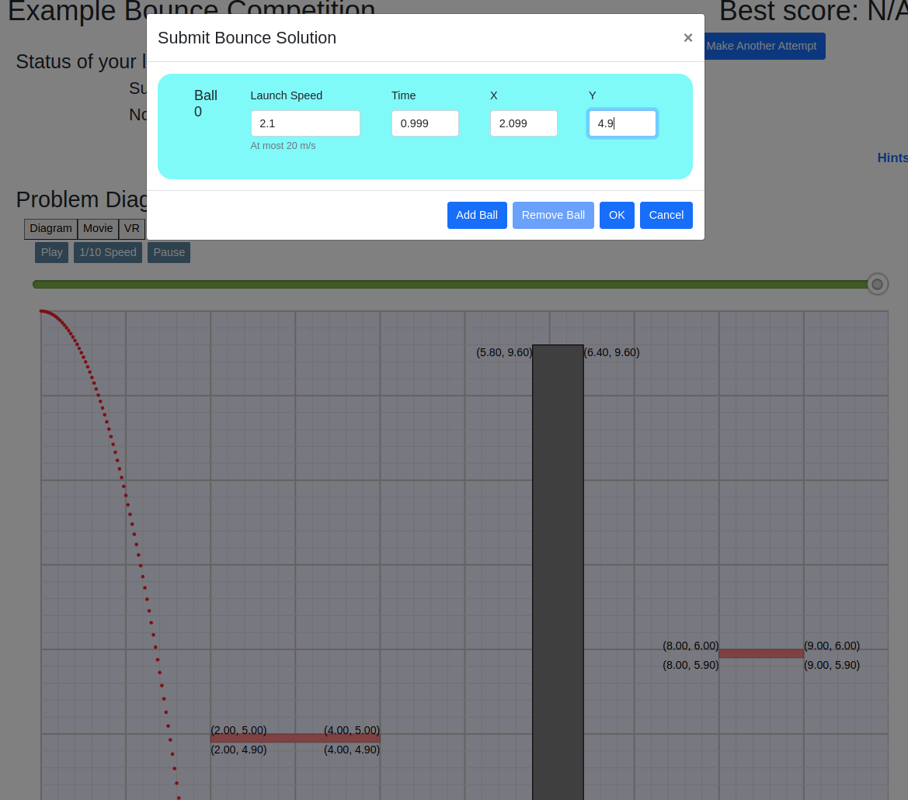
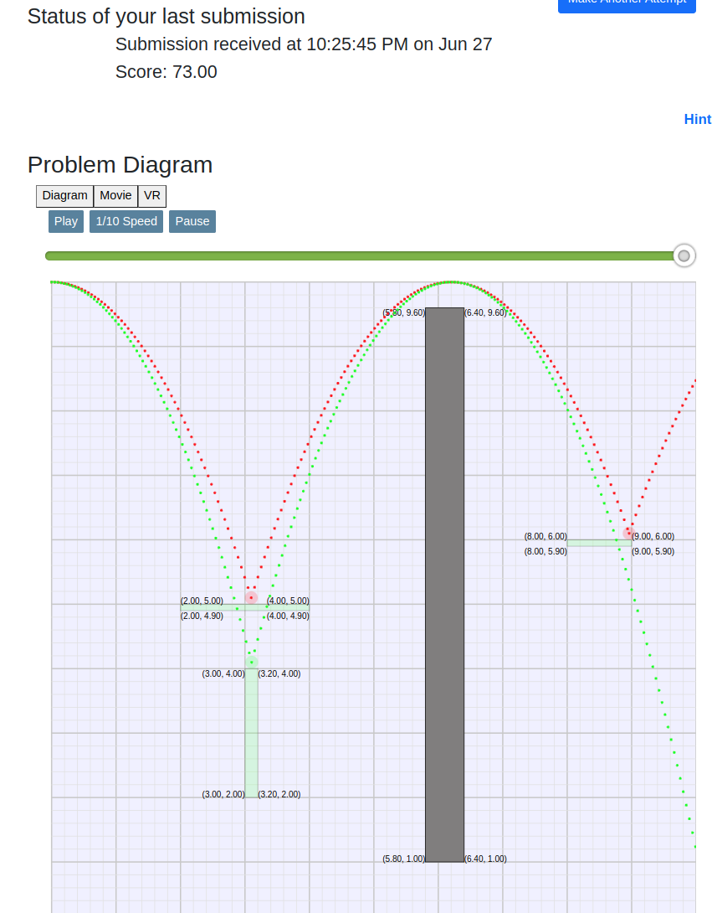
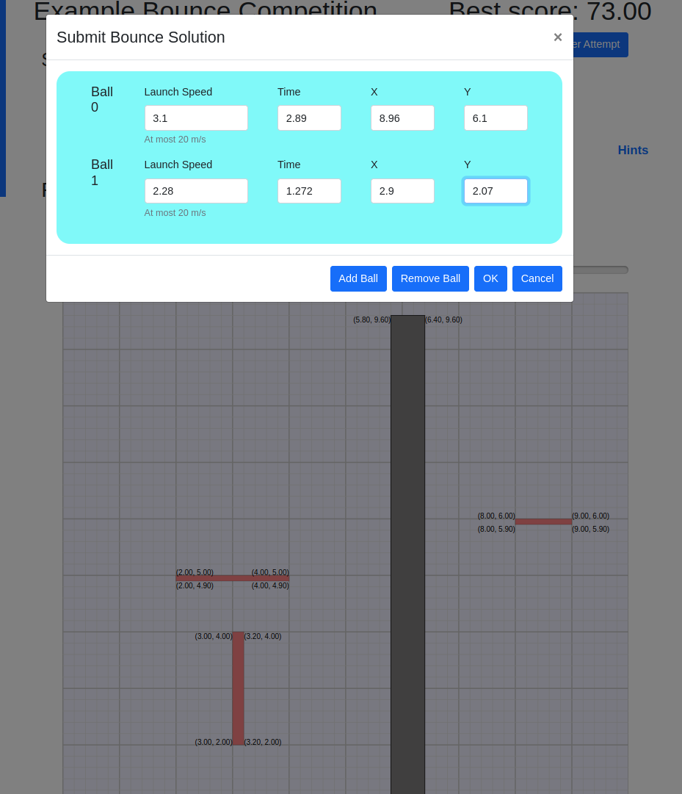

These hints will give you direct answers for the example Bounce competition, along with some of the reasoning behind the answers. (See Detailed Bounce Instructions for full details on the rules.)
The example competition has three red targets, and one black barrier.
Let's start by shooting just one ball from the upper left corner, trying to hit the upper leftmost red target. Maybe 1.5 meter/sec will do the trick...
We click Make First Attempt and enter a 1 m/s speed for one ball. The competition also requires that we enter the time and location of the ball collision, but we'll leave that all-zeros for now.

Click the OK, and wait a brief moment while the system evaluates our design...
We get "Invalid solution" because we left the time and location of the collision as all zeros, but we can still see what our design did. Click the Play button to see that 1.5 m/s makes the ball drop short of our desired target.

So, that didn't work. We could always guess until we get the answer, but let's try some physics instead.
To hit the target, the center of the ball must fall 4.9 meters, because it starts at 10m, and
the top of the target is at y = 5.0. (note the (x,y) labels on its corners.
That might seem like a 5m fall, but the ball radius is .1m, so the ball center
only falls from y=10 to y = 5.1m -- a drop of 4.9m
With gravity of 9.81 m/s, the standard gravitational acceleration equation shows the ball will fall 4.9m in .999 seconds. (Check this on your own, possibly with help from an instructor.)
So, a speed of say 2.1 m/s will make the ball travel to the right
Let's do another attempt, entering 2.1 m/s, and the collision time of .999 and location of x = 2.099 and y = 4.9.

And we hit the target, which turns from red to green to indicate it was hit.

But, it's still an "invalid attempt" because we didn't hit all the targets, and we did hit the barrier.
If we arranged it right, perhaps we can bounce the ball over the barrier, and get the target on the right as well. Did you notice how the ball arcs all the way back up to 10m on the bounce? A perfectly elastic bounce loses no kinetic energy, so the ball rises all the way back to its original height. And during the entire flight, the horizontal speed remains constant if all the collisions are purely in the vertical dimension. So, let's adjust the speed so the ball hits the target at x=3.0 or so, putting the peak of the bounce at around x=6.0, to go over the barrier and hit the second target.
A speed of 3.1 m/s will do this. (The math is left as an exercise.)

How we get a final collision at the far end of the second target, so the ball nails two targets and leaves the scene as fast as possible.

The lower left target is hidden underneath the first target we hit, so we can't get them both with one ball. But, targets and barriers "retract" after they're hit, so they're out of the way for later balls. Let's add a second ball to hit the lower target once the first ball has "cleared the way".

The second ball's arc shows in green, hitting the top of the final target and bouncing over the barrier.

We finally have a "valid solution", since we nailed all targets without hitting a barrier, and we got the right final collision times and x/y locations for both balls.
But, our solution only warrants 73 out of 100 possible points. A full 100 requires that our final ball exit the scene as fast as possible. We can do this by hitting the side of the final target and dropping off the bottom, which will take much less time than bouncing the second ball over the barrier.

Now the second ball bounces low on the side of the target for the fastest possible exit.

This would get us 100, but we got penalized 10% becasue used too many attempts.
If we'd done
exact math from the start, we would have been able to get to this point with a
single attempt.